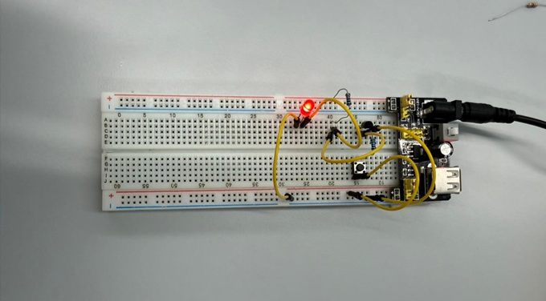
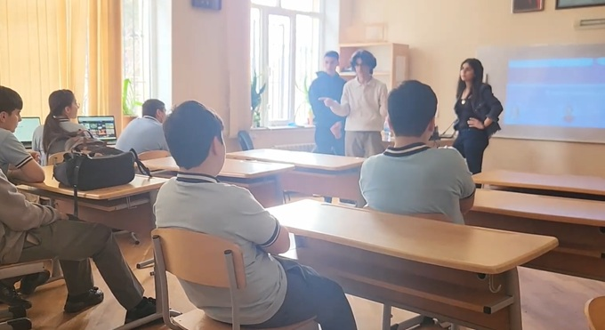
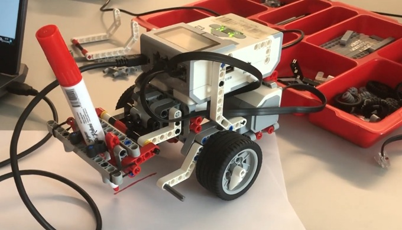

This page is dedicated to, but not limited with, projects within course called Principles of Information Systems (SITE-1101). It is an introductory course for School of IT & Engineering of ADA University. Throughout the semester we acquainted with logical operations, algorithms, AI and programming. As a result, we were divided to teams and through collaboration we utilized our knowledge during these projects. This website is also a project for this course.

Every app, game, and website you use is powered by tiny decision-makers working billions of times per second. Logic gates are the fundamental building blocks of all digital systems, turning simple electrical signals into logical decisions. Each gate follows a basic rule—like AND, OR, or NOT—to determine an output based on given inputs. While individually simple, their combinations create powerful circuits that enable everything from basic calculations to complex computing. In essence, they transform abstract logic into real, functioning technology. To explore this concept hands-on, we built various logic gates including AND-, OR-, NOT-gates using a breadboard, where these abstract rules become visible and interactive. By wiring basic components and switches on a breadboard, we recreated these fundamental gates and demonstrated how inputs translate into outputs in real time—often using LEDs to visualize the results. This project highlights not only an understanding of digital logic, but also practical skills in circuit design, troubleshooting, and translating theory into working hardware. During this project, we also collaborated with other team to make NAND- and XOR-gates.

Artificial intelligence is no longer a distant concept — it's already shaping how we learn, work, and interact every day. The Hour of AI initiative is designed to make this powerful technology accessible, engaging, and understandable for everyone. In a short, focused session, participants are introduced to the core ideas behind AI — how machines learn from data, recognize patterns, and make decisions, as well as fundamental ideas of algorithms. Rather than focusing on complex theory, the initiative emphasizes hands-on activities and real-world examples, allowing learners to experience AI in action in an engaging way. Our team visited school number 135 in order to introduce AI and algorithms to the 8th and 7th grade students in an engaging way. After a fascinating session in which stusents learned essence of AI technologies and algorithms as well as implemented them in practice, we gathered certificates to encourage students for expanding broader concepts.

Robots turn lines of code into movement, transforming ideas into actions you can see and measure. In this Robotics project using LEGO Mindstorms EV3, the goal was to design and program a robot capable of drawing. By assembling the EV3 components and integrating motors, sensors, and a marker mechanism, we created a system that could translate programmed instructions into precise physical motion. The challenge went beyond simple construction—it required calibrating movement, controlling speed and direction, and ensuring accuracy in the drawings. Through this project, abstract concepts like algorithms and coordinate control became tangible. It demonstrated not only an understanding of robotics and programming, but also problem-solving skills, iteration, and the ability to turn a creative idea into a functioning, real-world system.
Nowadays, people like to place red flags but let's place them where they are actually needed. Play browser-based Minesweeper (8 × 8 grid, 10 mines) built for this site: on desktop, left-click reveals and right-click flags; on a phone, tap reveals and a long press flags. You can play directly below or open the full page for the same game with the site navigation.